DL for shape structures prior
形状+结构先验 DL类方法
part/structure-aware shape representation
shape correspondence
- Deformed Implicit Field: Modeling 3D Shapes with Learned Dense Correspondence
- Deep Implicit Templates for 3D Shape Representation
"Unsupervised Learning of Intrinsic Structural Representation Points"
[ CVPR2020 ] [paper] [code] [ 
The University of Hong Kong, MPI, Shandong University ] [ 
Adobe ]
[ Nenglun Chen, Lingjie Liu, Zhiming Cui, Runnan Chen, Duygu Ceylan, Changhe Tu, Wenping Wang ]
[ abcd ]
Click to expand
-
Motivation
- 点云输入，无监督地learning structures of 3D shape
- 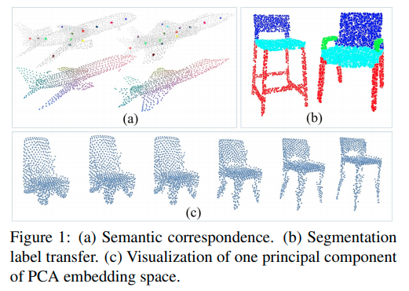
-
results
- 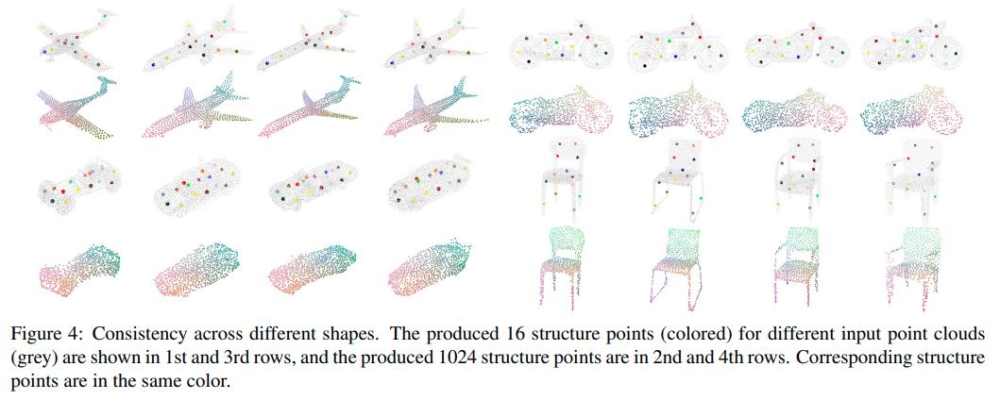
"Learning Implicit Functions for Topology-Varying Dense 3D Shape Correspondence"
[ NeurIPS2020(Oral) ] [paper] [supp] [code] [web] [ 
Michigan State University ]
[ Feng Liu, Xiaoming Liu ]
[ implicit function, correspondence score, category shape correspondence ]
Click to expand
-
Motivation
- 给定一组3D shapes（点云），category-specific model 无监督地学出逐pair（source 与target之间）的correspondence和部件segmentation
- 即使拓扑不一样也能学到相关性
- 有
correspondence相关性分数输出
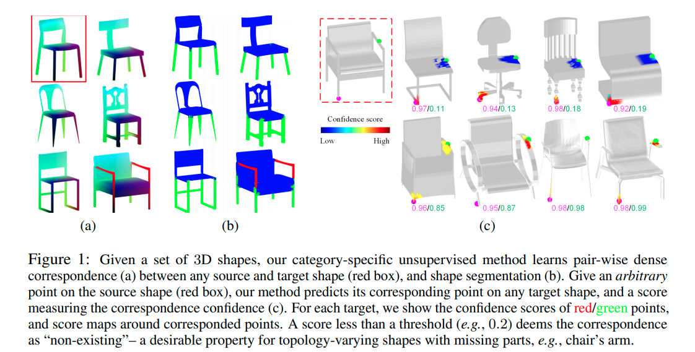
- Overview
shape analysis
<IP-Net> "Combining Implicit Function Learning and Parametric Models for 3D Human Reconstruction"
[ ECCV2020(Oral) ] [paper] [code] [web] [ 
MPI ] [ 
Google ]
[ Bharat Lal Bhatnagar, Cristian Sminchisescu, Christian Theobalt, Gerard Pons-Moll ]
[ parametric human body model SMPL ]
Click to expand
-
Motivation
-
keypoint 1：不是inside / outside两类区分的单层表面，而是 inside the body (R0), between the body and clothing (R1), outside the clothing (R2) 3类区分的双层表面
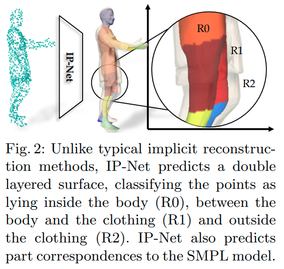 -
keypoint 2
- 隐函数类的方法可以产生任意分辨率的细节，但是一般是static的不能控制
- 建立和parametric body model (SMPL)的相关性，可以对预测出的implicit surface
register注册 SMPL+D ，让预测出的implicit representation 可以控制
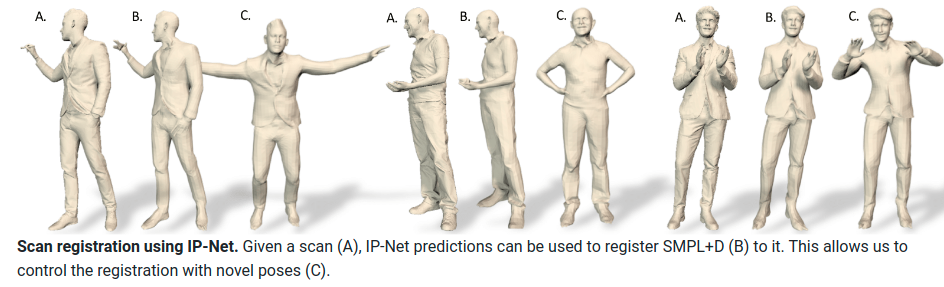
-
keypoint 1：不是inside / outside两类区分的单层表面，而是 inside the body (R0), between the body and clothing (R1), outside the clothing (R2) 3类区分的双层表面
-
overview
- 输入一个稀疏点云（来自有关节、不同形状、不同pose、不同clothing的人类），一个occupancy predictor估计R0,R1,R2，一个multi-class classifier 估计part label（人的14类part）
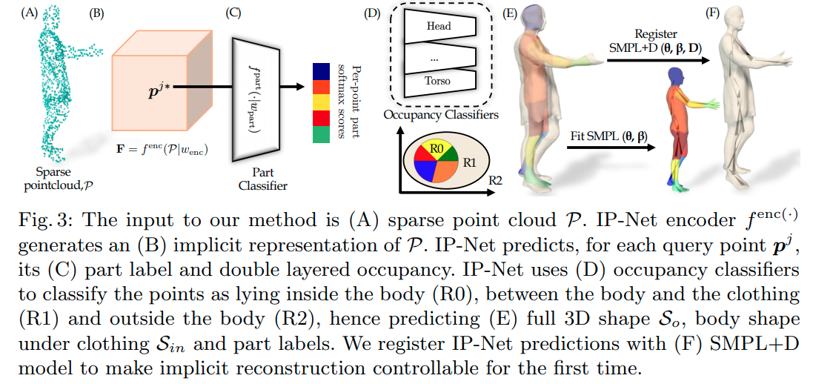- 使用Marching Cubes从predict出的implicit functions产生mesh surface（内表面，外表面）
- 把IP-Net的predictions注册到SMPL人类模型
- optimization-based ，最优化SMPL的参数来fit 内表面预测\(\mathcal{S}_{in}\)
- 额外利用IP-Net预测出的part-labels，来保证SMPL的不同部件的mesh能正确解释对应部件的surface区域
- 同样的idea还可以generalize to 3D hands
- 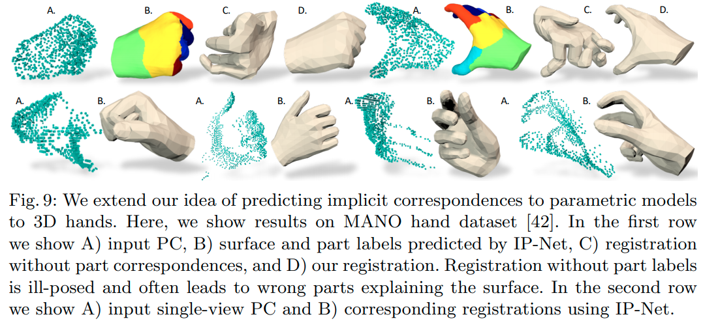
- 输入一个稀疏点云（来自有关节、不同形状、不同pose、不同clothing的人类），一个occupancy predictor估计R0,R1,R2，一个multi-class classifier 估计part label（人的14类part）
structured models
- BSP-Net: Generating Compact Meshes via Binary Space Partitioning
- partnet
- structure net
"BAE-NET: Branched Autoencoder for Shape Co-Segmentation"
[ ICCV2019 ] [paper] [supp] [code(tf)] [ 
SFU, IIT Bombay ] [ 
Adobe ]
[ Zhiqin Chen, Kangxue Yin, Matthew Fisher, Siddhartha Chaudhuri, Hao Zhang ]
[ one-shot learning, k-neuron, inside-outside indicator ]
Click to expand
- *
Learning Implicit Fields for Generative Shape Modeling (CVPR2019)* 的续作，inside / outside indicator作为shape表征 -
Motivation
- 把形状的
co-segmentation看做表征学习问题 - 可以无监督、弱监督、
one-shot learning，只需要用几个exemplars，就可以在shape 分割任务上好过在分割shape上训练的SOTA - 无监督的 co-segmentation
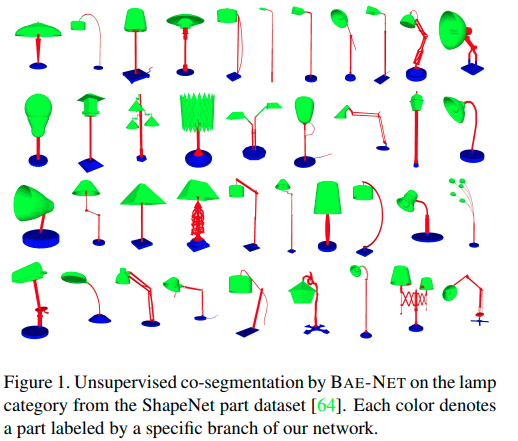
- 把形状的
-
overview
- 就是在Learning Implicit Fields for Generative Shape Modeling 的基础上，从原来的单个inside / outside indicator变成
k个inside / outside indicator (branched output, one neuron each) ，然后在最后max pooling 把几个neuroncompose在一起。 
- 让网络 “自动” 学出来一个个natural shape的neuron；没有强制保证
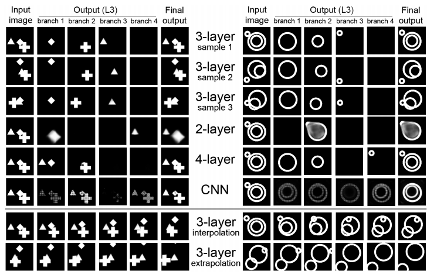
- 就是在Learning Implicit Fields for Generative Shape Modeling 的基础上，从原来的单个inside / outside indicator变成
<NSDN> "Neural Star Domain as Primitive Representation"
[ NeurIPS2020 ] [paper] [ 
The University of Tokyo ] [ 
RIKEN AIP ]
[ Yuki Kawana, Yusuke Mukuta, Tatsuya Harada ]
[ abcd ]
Click to expand
-
Motivation
- Reconstructing 3D objects from 2D images + structured reconstruction
- 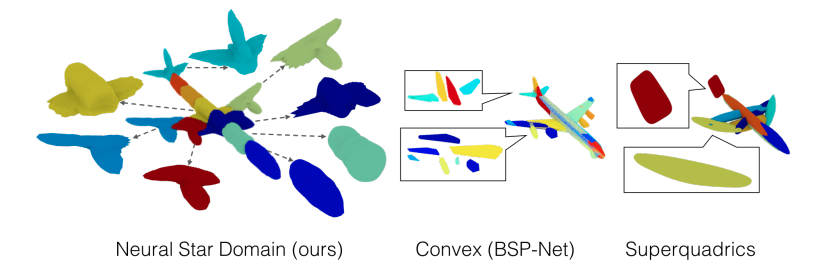
- 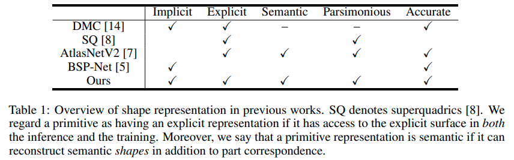
-
overview
- 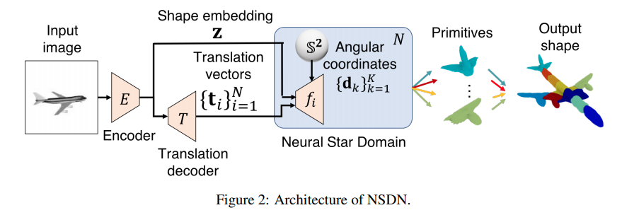
"DSM-Net: Disentangled Structured Mesh Net for Controllable Generation of Fine Geometry"
[ 2020 ] [web] [paper] [ 
中科院计算所, 中科院大学, Stanford, Cardiff University ] [ 
company ]
[ Jie Yang, Kaichun Mo, Yu-kun Lai, Leonidas Guibas, Lin Gao ]
[ 3D shape generation, disentangled representation, structure, geometry, hierarchies ]
Click to expand
-
Motivation
- 把structure(topology)和geometry进一步解耦，in a synergistic manner

-
Overview
- 用Recursive Neural Networks(RvNNs, 注意RNN是recurrent NN) hierarchically encode和decode structure和geometry，在hierarchy的每一层都有bijective mapping
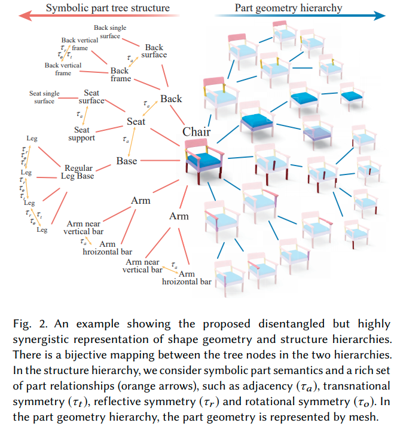 - 同时用两个分开的但是高度耦合的VAE学习structure 和geometry，把他们encode into two latent spaces
- 用Recursive Neural Networks(RvNNs, 注意RNN是recurrent NN) hierarchically encode和decode structure和geometry，在hierarchy的每一层都有bijective mapping
-
disentangled shape representation
- structure hierarchy抽象出符号部件(symbolic parts)与关系
- inspired by PT2PC: Learning to Generate 3D Point Cloud Shapes from Part Tree Conditions. 2020
- 每个部件用semantic label (e.g. chair back, chair leg)表示，引入PartNet dataset中丰富的部件关系
- \(\boldsymbol{\rm H}\) 纵向的parent-child inclusion 关系 (e.g. chair back and chair back bars)
- \(\boldsymbol{\rm R}\) 横向的among-sibling 部件对称性与邻接性(e.g. chair back bars have translational symmetry)
- geometry hierarchy是部件的geometry
- 表征就是正常的多顶点mesh
- 假设一个5402顶点构成的封闭mesh，计算oriented bounding box
- 然后通过non-rigid registration 变形这个mesh到target part geometry
- 然后用ACAP作为部件表征
- Sparse data driven mesh deformation. 2019
- SDM-NET: Deep Generative Network for Structured Deformable Mesh. 2019
- structure hierarchy和geometry hierarchy之间有bijective mapping
- 符号部件\(l_i\)对应部件geometry \(G_i\)，层级\(\boldsymbol{\rm H}\)和关系\(\boldsymbol{\rm R}\)则隐式地互相一致
- 在学习的时候两个hierarchies有communication channels
- 虽然结构和几何要解耦，但是他们还是需要彼此兼容来产生好的、现实的形状
- 一方面，shape structure 为 part geometry提供high-level guidance
- e.g. 如果four legs of a chair对称，那么他们应该具有identical part geometry
- 另一方面，给定part geometry以后，只有若干种适用的shape structures（而不是全部）
- e.g. 如果没有lift handle或者gas cylinder parts，不可能组装一个swivel chair
- 一方面，shape structure 为 part geometry提供high-level guidance
- 符号部件\(l_i\)对应部件geometry \(G_i\)，层级\(\boldsymbol{\rm H}\)和关系\(\boldsymbol{\rm R}\)则隐式地互相一致
- structure hierarchy抽象出符号部件(symbolic parts)与关系
-
conditional part geometry VAE
- encode和decode时候都condition on part structure information
- 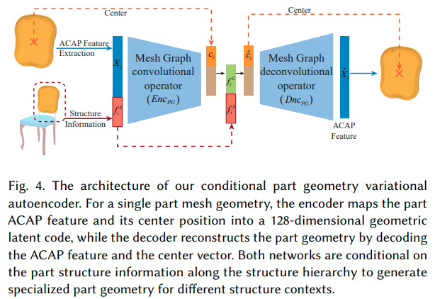
-
Disentangled Geometry and Structure VAEs
- 下图蓝色代表geometry，红色代表structure
encoding的时候，从geometry和structure feature encode出geometry
decoding的时候，从geometry和structure feature decode出geometry
- 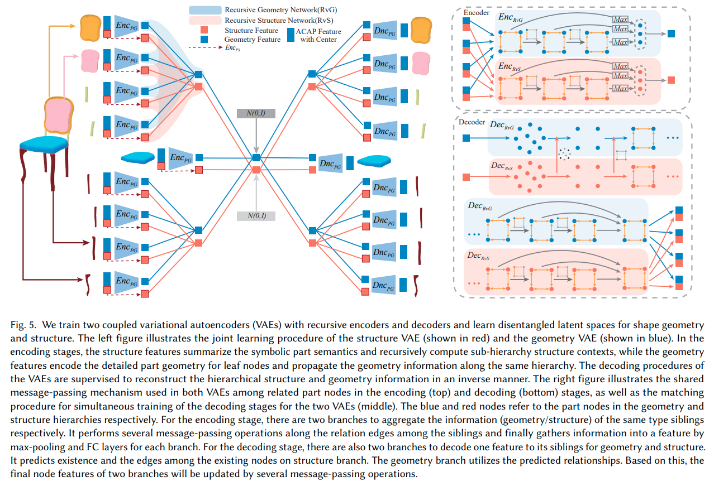
- Q: what?
- 下图蓝色代表geometry，红色代表structure
-
results
- 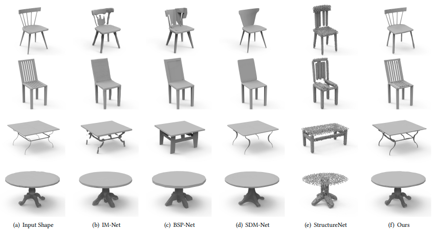
"Compositionally Generalizable 3D Structure Prediction"
[ arXiv2020 ] [paper] [[code]] [ 
UCSD, USTC, Stanford ] [ 
Google ]
[ Songfang Han, Jiayuan Gu, Kaichun Mo, Li Yi, Siyu Hu, Xuejin Chen, Hao Su ]
[ object parts, single view, partnet dataset ]
Click to expand
-
Review
- 思路、框架清晰；carefully designed subproblems
- 可解释性很强，不是随随便便拿来GCN胡乱用一下
- 部件表征：cuboids
-
Motivation
- 学到不同物体、不同物体类别之间那些公共的部件、部件间的关系、连接
- 把整个物体的shape生成问题转为几个子问题的组合
- 关注的是逐part pair的相对位置的预测
- 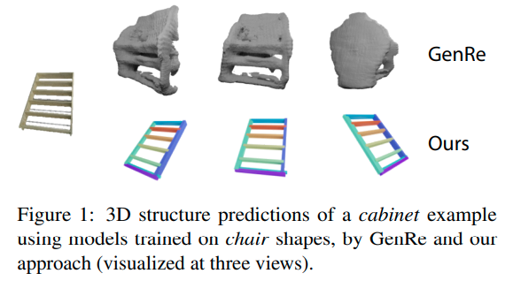
-
overview
- 用geometry primitives来代表部件（具体来说，oriented bounding cuboids，长方体），每个部件有\(p_i=[c_x,c_y,c_z,s_x,s_y,s_z,q]\)
- 遵循StructureNet的设定
Structurenet: Hierarchical graph networks for 3d shape generation 2019
- 遵循StructureNet的设定
- 所有模块都是有监督的；part真值来自于PartNet的3D labels
- 步骤：
- MaskRCNN来提取部件instance mask
- identify parallelism for part pairs，对每组平行的部件预测他们共享的edge direction
- identify translational symmetry within part pairs，对每组平动对称的部件预测他们共享的edge length
- 预测部件pairs之间的连接性，提取一个基于连接性的部件树
- 预测邻接部件的相对位置，在遍历部件树的时候组装整个形状
- [isolation principle] 重度依赖部件masks作为模块的输入来引起对局部区域的关注
- [relativity principle] 依赖于pairwise关系
- 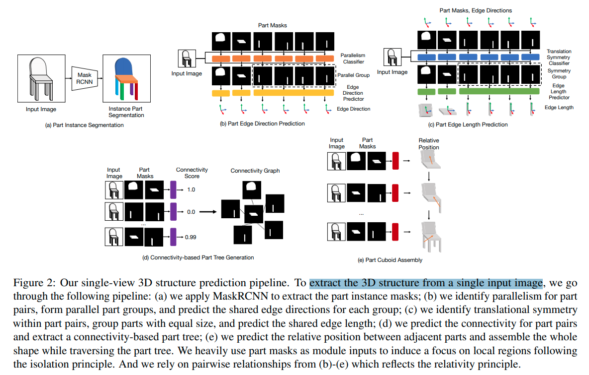
- 用geometry primitives来代表部件（具体来说，oriented bounding cuboids，长方体），每个部件有\(p_i=[c_x,c_y,c_z,s_x,s_y,s_z,q]\)
- ==relative position prediciton==
- 从root part开始，逐pair地添加other parts
- 很多过去的工作都是估计在相机坐标系下的绝对位置，或者是一个(类别级别先验)canonical space下的pose
- 然而，绝对位置对于shape scale敏感，对optical axis的平动也很敏感，对于简单的类别内预测的表现都很差
-
Connectivity-based Part Tree：追求通过strong pairwise relationships来组装parts
- 主要用的是基于连接性的关系
- 首先识别空间上接触的部件pair，然后预测他们之间的相对位置
- 选择【接触关系】原因：
- 接触的部件空间上接近，互相之间有strong arrangement constraints
- 当没有遮挡情况下，评估两个部件有没有接触在图像上都不太难，并不需要类别级别的知识
- 这种关系非常普遍
- 对于新类别的物体也可以很好地迁移
- ==思考==
- 这里的想法和我们非常一致，我们扩展到更多类型的关系应该就可以实现
- 主要方法
- 训练一个连接性分类器，预测parts pair是否在原来的3D shape 互相接触
- 用连接性类构建一个part tree
- 首先构建一个连接图，把连接性分数高的pair连接起来
- 然后贪婪地构建一个spanning tree
- 具体：通过预测出的大小，选最大的part作为root node，然后迭代地选剩下的最大的部件连到当前树上
- 如果图中包含多个连接起来的components，那就构建part forest
-
joint-based relative position 逐pair预测相对位置
- instead of 直接预测两个center的相对位置，基于接触点来用上更强的位置先验
- 接触点必须位于每个部件的cuboid中
- 用接触点来参数化部件center之间的相对关系
- 接触点
- 在part \(p_1\)坐标系下接触点坐标\(c^1\)，在part \(p_2\)坐标系下接触点坐标\(c^2\)，假设\(p_1\), \(p_2\)在world frame下坐标为\(l_1^W\), \(l_2^W\)，由于是同一个点，应有
\(l_1^W+c^1=l_2^W+c^2\) - 则两个center之间的相对位置可以这样infer：
\(l_{1 \rightarrow2}^W=l_2^W-l_1^W=c^1-c^2\) -
-
Q：这里可能有些问题，考虑到坐标系旋转，并不应是简单加法，不过意思到了
A：没有问题，这里\(c^1\), \(c^2\)都是世界坐标系下的
-
Q：这里可能有些问题，考虑到坐标系旋转，并不应是简单加法，不过意思到了
- 在part \(p_1\)坐标系下接触点坐标\(c^1\)，在part \(p_2\)坐标系下接触点坐标\(c^2\)，假设\(p_1\), \(p_2\)在world frame下坐标为\(l_1^W\), \(l_2^W\)，由于是同一个点，应有
- 接触点估计：如何infer \(c^i\)
- 接触点应位于cuboid表面或者cuboid内部，因此将接触点表示为cuboid顶点的interpolation
\(c^i=\sum_{j=1}^{8}\omega_{i,j}\cdot v_{i,j}\), where \(\sum_{j=1}^8\omega_{i,j}=1\) and \(\omega_{i,j} \geq0\) - 用神经网络预测\(\omega_i,j\)，输入reference image和两个部件mask的feature的stack
- 为了让接触点预测的结果和cuboid顶点顺序无关，结构和PointNet segmentation的结构类似
- Deep learning on point sets for 3d classification and segmentation.2017
- 接触点应位于cuboid表面或者cuboid内部，因此将接触点表示为cuboid顶点的interpolation
- 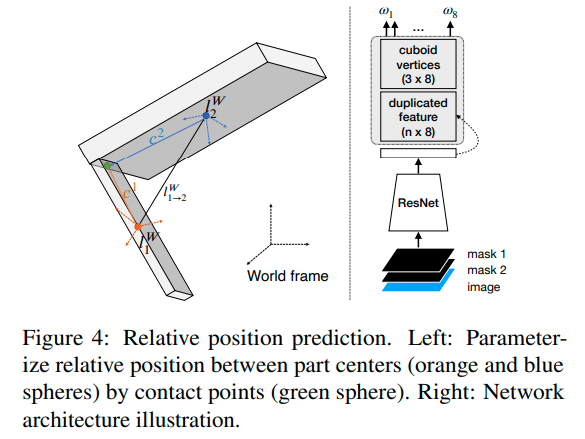
- 接触点
-
效果
- 真值mask基本可以做到很完美的组装，predicted mask效果也可以接受，毕竟predict出来的mask会出问题
- 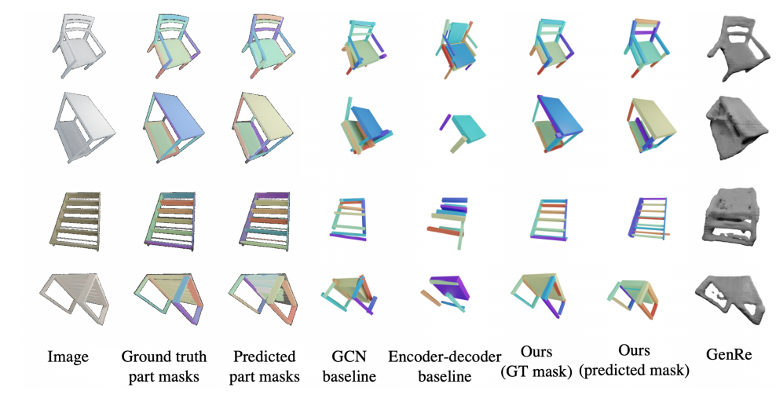